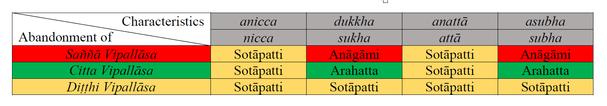

January 28, 2017; re-written October 15, 2019; revised June 23, 2022; May 28, 2023
The word vipallāsa (used in plural) means "confusion." One gets confused because one has the wrong views (diṭṭhi). That leads to distorted perceptions (saññā), which affect the way one thinks (citta). That is how we generate (abhi)saṅkhāra that leads to future suffering. This is just another way to analyze the origin of suffering.
Wrong Views Come First
1. One's perceptions (saññā) are closely associated with one's views (diṭṭhi), and both of those affect how we think (citta) and generate saṅkhāra.
Most of our worldviews are shaped by the ideas from our families, friends, and religions we are born into. Those inputs play a significant role in our worldviews. In turn, they mold our perceptions and how we think—and thus generate saṅkhāra.
- It is not possible to get rid of the wrong or distorted perceptions (viparita saññā) without getting rid of the erroneous views (micchā diṭṭhi or simply diṭṭhi).
- Some dominant world views must be removed before one can even hope to get an idea about anicca saññā. We will discuss some of these critical factors first.
Wrong Views on Heaven, Hell, and Human Realms
2. Most people believe in eternal heaven after death. That perception is based on the worldview of three "major categories or realms." Those are hell, the human world, and heaven. This worldview and the corresponding perception of saññā are passed down through generations in families that have been taught it via religious teachings.
- That worldview also says that a Creator created the Earth. That Creator resides in the heavens, and those who live by those teachings will join the Creator. Those who disobey those teachings are supposed to be born in hell for eternity.
- Even though modern science rejects that cosmic worldview, most people still hold to it. The heavens comprise trillions of planetary systems, just like our Solar System.
- Astonishingly, even some prominent scientists are willing to disregard scientific facts. They believe (i.e., have the perception) that a Creator created the Earth and the whole universe. I am not sure where they think that Creator resides among those trillions of star systems.
Wrong Views About Animals
3. Another example is killing animals for sport, which includes fishing. That is based on the view that animals are not sentient and were created by the Creator for human consumption. That is such an ingrained diṭṭhi that many people who live otherwise moral lives fail to see the suffering endured by these animals.
- While fish cannot cry out, the severe pain felt by a wriggling fish caught on a hook is quite apparent. It feels pain in the mouth from the hook. It also suffers due to a lack of oxygen since it cannot breathe as we do.
- Higher animals are capable of showing their pain, among other emotions. Anyone who has a pet dog or cat knows they have emotions/feelings, as we do.
- But we tend to disregard such easy-to-see things because of our diṭṭhis. The underlying reason is the religious view that animals are here for our consumption.
4. However, we all have had animal, Deva, and Brahma births. Comprehension of this fact can help change one's perception of animals.
- However, even in Buddhist countries, there are fishing villages where many have made a living from fishing for generations.
- Some may say that those people need to make a living to sustain their families. But that argument is no better than the argument that a drug addict needs to inhale another dose to get through the day: the long-term consequences are infinitely worse.
- It is customary for the older generations to teach their children or grandchildren how to fish or hunt animals for sport. That custom passes through generations.
- Still, we cannot equate animal lives to human lives, as some animal rights activists believe. When one comprehends the Buddha's Dhamma, one can avoid falling into either extreme.
Wrong Views Lead to Wrong Perceptions (Saññā)
5. The above are several prominent examples of major micchā diṭṭhi. One can remove distorted perceptions (viparita saññā) by removing such wrong views (micchā diṭṭhi). Learning the Buddha Dhamma helps get rid of wrong views.
- The key reason those diṭṭhis propagate through generations is the inability to "break through" such ingrained beliefs by contemplating facts.
6. Another wrong view (and hence the wrong perception) that we have is about the high value placed on our physical bodies' "beautification." This perception is predominant in Western countries but is growing in other countries.
- People spend billions of dollars a year trying to make their physical bodies "more beautiful." They don't realize -- or don't even contemplate -- the following fact. No matter how much money one spends, one's body will not remain in peak condition for long.
- That wrong perception leads to an enhanced level of suffering in old age when one's body becomes frail and less appealing. That can lead to severe depression.
- For those who have comprehended the anicca nature, old age is a fact of life. While the brain is working optimally, one should spend one's "peak years" not beautifying one's body but making progress on the Path. As the body begins to degrade with age, the brain deteriorates. So, one must exercise and eat healthily to keep the body and the brain in good condition for as long as possible.
- That happens to everyone, regardless of how powerful or wealthy they are. At President Trump's inauguration, this was quite obvious by looking at the ex-Presidents.
- Think of any famous, beautiful, or wealthy person who has grown old to convince you of the truth of this anicca nature.
Characteristics of Anything (Saṅkhata) In This World
7. Anything in this world -- living or inert -- has that anicca nature. A saṅkhata is born (uppāda) and destroyed (vaya.) In between, it is in existence but is still subjected to unexpected change (ṭhitassa aññathattaṁ.) Those are the three stages of a saṅkhata; see, for example, "Ānanda Sutta (SN 22.37)."
- Some things in this world (saṅkhata) last a short time: for example, a fly or a flower. Other things can last for tens of years: for example, a human or a car. Some things/beings live much longer: for example, a Brahma or a star system like our Solar System.
- But eventually, anything in this world -- a saṅkhata -- decays and is destroyed at some point.
- Even though those things that reach the peak condition can provide/enjoy sensory pleasures, they do not last long.
- The overall effect or the net effect is suffering when one considers the rebirths in the 31 realms in the long term.
Four Types of Vipallāsa (Confusions) and Three Variations
8. The Buddha stated that there are four types of vipallāsa, or confusions, about the wrongly perceived nature of the world as nicca, sukha, atta, and subha. See, Vipallāsa Sutta (AN 4.49). We have discussed the first three in detail on this website. The subha (pleasurable) vipallāsa is mainly associated with the "olārika sensory pleasures" (taste, smell, and bodily contact) in the realm of kāma loka.
- No matter how appealing those sensory pleasures or sense objects can be, they all make one get trapped in kāma loka. That is why they are asubha.
9. Each vipallāsa has three variations (layers) of diṭṭhi, saññā, and citta.
- Each confusion (vipallāsa) may be expressed via views, perceptions, and how we automatically think. They affect the saṅkhāra generation and especially puñña abhisaṅkhāra and apuñña abhisaṅkhāra; See, "Sankhāra – What It Really Means."
Confusion About a Tilakkhana Is the Key - They Lead to Sankhāra
10. Let us consider the diṭṭhi, saññā, and citta vipallāsa about the anicca nature as an example.
- We have the wrong view that things in this world have a nicca nature, i.e., that they can provide happiness. That is the diṭṭhi vipallāsa about the actual anicca nature.
- Because of this wrong view, we develop the saññā vipallāsa about the anicca nature of things: We tend to perceive (saññā) that worldly things can provide happiness.
- We tend to think (citta) that things in this world can provide us with happiness due to a wrong perception. Thus, we do (abhi)saṅkhāra that prolong the rebirth process for puñña abhisaṅkhāra. Even worse, they make one suffer mightily in the future rebirths through apuñña abhisaṅkhāra.
- Therefore, we constantly generate manō saṅkhāra (automatic thoughts about worldly sense objects), vaci saṅkhāra (conscious thoughts or speech), and act accordingly (kāya saṅkhāra).
Sankhāra Lead to Future Suffering
11. All three types of such saṅkhāra lead to suffering in this life and in future rebirths. These are the saṅkhāra that arise due to avijjā (not realizing the true nature of this world): "avijjā paccayā (abhi)sankhārā."
Abhisaṅkhāra eventually leads to bhava and jāti via Paṭicca samuppāda. Here, jāti means both future rebirths and "births during this life;" see "Suffering in This Life and Paṭicca Samuppāda."
- That is why it is essential first to learn Dhamma and to realize that suffering in this life can arise from our conscious thoughts and actions. Not only that, but that suffering CAN BE stopped from arising.
- Once one comprehends this fact and lives accordingly, one can experience the niramisa sukha when one removes this type of suffering.
- Furthermore, this helps one build true faith (saddha) in the Buddha Dhamma. It will convince one of the truths about the much worse type of suffering in future rebirths.
- More details are in the first few subsections in the "Living Dhamma" section.
12. At that stage, one may comprehend the anicca nature of the rebirth process. The truth of the rebirth process is that nowhere in the 31 realms can one find happiness.
- Moreover, one will "see" that unimaginable suffering exists in the lowest four realms (apāyā). That will help dispel the diṭṭhi vipallāsa about dukkha. Instead of the wrong view that there is happiness in human, deva, or Brahma realms, one will "see" that any pleasure to be had is only temporary. Furthermore, there is much more suffering inevitable if one stays in the rebirth process.
- One will also "see" that one is genuinely helpless if one stays in this rebirth process (samsāra). Thus, one will get rid of diṭṭhi vipallāsa (that this world is of atta nature) and truly "see" the "anatta nature."
- One will also "see" that -- in the long run -- things in this world are not subha, i.e., they are not beneficial or fruitful. Attachment to anything in this world will lead to suffering in the long run. Thus, a Sōtapanna will have removed the diṭṭhi vipallāsa "distorted views" about subha nature as well.
- That is how one gets rid of diṭṭhi vipallāsa. That leads to Nibbāna via dissociating from the material world; see "Nibbāna."
Saññā Vipallāsa
13. saññā (pronounced "sangnā") comes from "san" + "gnāna," which means "wisdom" about "san." But regular humans have only viparita saññā or saññā vipallāsa: they do not see "san" as bad.
- Removal of saññā vipallāsa requires getting rid of diṭṭhi vipallāsa, which in turn requires attaining sammā diṭṭhi. Then, one will perceive the benefits or the harm in each speech or action one is about to make.
- When one has the right vision and perceives things as they are, one will start thinking along those lines. Then one will begin removing citta vipallāsa.
Removal of Vipallāsa
14. For completion, we will end with the following technical details. All three types of vipallāsa regarding nicca and atta disappear at the Sōtapanna stage. However, only the diṭṭhi vipallāsa about sukha and subha goes away (Note that the true nature is "dukkha and asubha.") That is in the "Vipallāsakathā" section in the "Paṭisambhidāmagga."
- That is why even though a Sōtapanna can "see" that things in this world can eventually lead to only suffering, he/she will still tend to enjoy sensory pleasures. That is due to the remaining saññā and citta vipallāsa about sukha and subha. However, those do not involve apāyagāmi deeds.
- Saññā vipallāsa about sukha and subha is lessened at the Sakadāgāmi stage are entirely removed at the Anāgami stage. Even though an Anāgami has eliminated the desire for sense pleasures in the kāma lōka, he/she will still tend to enjoy jhānic pleasures.
- All vipallāsa go away entirely only at the Arahant stage. An Arahant does not make apuñña abhisaṅkhāra that leads to heat (or thāpa) in the mind and makes one eligible to be born in the apāyā. He does not make puñña abhisaṅkhāra that makes one eligible to be born in the "good realms" either. He makes only kammically neutral saṅkhāra or kriya to maintain life until Parinibbāna or death.
15. Removal of saññā and citta vipallāsa, respectively, at the Anāgāmi and Arahant stages can be understood as follows. Saññā and citta vipallāsa regarding sukha and subha arise due to "kāma."
- Most apāyagāmi deeds are done with kāmacchanda nivarana, "covering a mind," and it is removed at the Sotāpanna stage. Kāmacchanda appears when "kāma" -- craving for sensual pleasures -- optimizes and "makes one blind."
- However, a Sotāpanna has "kāma rāga," meaning a Sotāpanna still craves sensual pleasures.
- An Anāgāmi has removed "kāma rāga," and thus, saññā vipallāsa for sukha and subha.
- It is only at the Arahant stage that even a trace of vipallāsa for kāma is removed with the removal of all "citta vipallāsa." This is explained in "Samāropanahāra vibhaṅga."
- The following chart provides a summary (many merits to Seng Kiat Ng for the chart and the above link):

28 de janeiro de 2017; reescrito em 15 de outubro de 2019; revisado em 23 de junho de 2022; 28 de maio de 2023
A palavra Vipallāsa (usada no plural) significa “confusão”. A pessoa fica confusa porque tem visões erradas (diṭṭhi). Isso leva a percepções distorcidas (Saññā), que afetam a maneira como se pensa (Citta). É assim que geramos (abhi)Saṅkhāra que leva ao sofrimento futuro. Esta é apenas outra maneira de analisar a origem do sofrimento.
As visões erradas vêm primeiro
1. As percepções (Saññā) de uma pessoa estão intimamente associadas às suas visões (diṭṭhi), e ambas afetam a forma como pensamos (Citta) e geram Saṅkhāra.
A maior parte de nossas visões de mundo é moldada pelas ideias de nossas famílias, amigos e religiões nas quais nascemos. Essas influências desempenham um papel significativo em nossas visões de mundo. Por sua vez, elas moldam nossas percepções e a forma como pensamos — e, assim, geram Saṅkhāra.
- Não é possível livrar-se das percepções erradas ou distorcidas (viparita Saññā) sem livrar-se das visões errôneas (Micchā Diṭṭhi ou simplesmente Diṭṭhi).
- Algumas visões de mundo dominantes devem ser removidas antes que se possa sequer esperar ter uma ideia sobre Anicca Saññā. Discutiremos primeiro alguns desses fatores críticos.
Visões erradas sobre o céu, o inferno e os reinos humanos
2. A maioria das pessoas acredita no céu eterno após a morte. Essa percepção baseia-se na visão de mundo das três “grandes categorias ou reinos”. São eles: o inferno, o mundo humano e o céu. Essa visão de mundo e a percepção correspondente de Saññā são transmitidas de geração em geração em famílias que a aprenderam por meio de ensinamentos religiosos.
- Essa visão de mundo também afirma que um Criador criou a Terra. Esse Criador reside nos céus, e aqueles que vivem de acordo com esses ensinamentos se unirão ao Criador. Aqueles que desobedecem a esses ensinamentos devem nascer no inferno para a eternidade.
- Embora a ciência moderna rejeite essa visão de mundo cósmica, a maioria das pessoas ainda a mantém. Os céus compreendem trilhões de sistemas planetários, assim como o nosso Sistema Solar.
- Surpreendentemente, até mesmo alguns cientistas proeminentes estão dispostos a desconsiderar os fatos científicos. Eles acreditam (ou seja, têm a percepção) de que um Criador criou a Terra e todo o universo. Não sei ao certo onde eles acham que esse Criador reside entre esses trilhões de sistemas estelares.
Visões erradas sobre os animais
3. Outro exemplo é matar animais por esporte, o que inclui a pesca. Isso se baseia na visão de que os animais não são seres sensíveis e foram criados pelo Criador para o consumo humano. Essa é uma diṭṭhi tão arraigada que muitas pessoas que levam uma vida moral de resto não conseguem enxergar o sofrimento suportado por esses animais.
- Embora os peixes não possam gritar, a dor intensa sentida por um peixe se contorcendo preso a um anzol é bastante evidente. Ele sente dor na boca causada pelo anzol. Ele também sofre devido à falta de oxigênio, já que não consegue respirar como nós.
- Animais superiores são capazes de demonstrar sua dor, entre outras emoções. Qualquer pessoa que tenha um cão ou gato de estimação sabe que eles têm emoções/sentimentos, assim como nós.
- Mas tendemos a desconsiderar essas coisas fáceis de ver por causa de nossos diṭṭhis. A razão subjacente é a visão religiosa de que os animais estão aqui para nosso consumo.
4. No entanto, todos nós já tivemos nascimentos como animais, Devā e Brahmā. A compreensão desse fato pode ajudar a mudar a percepção que temos dos animais.
- No entanto, mesmo em países Buddhistas, existem vilarejos de pescadores onde muitos ganham a vida pescando há gerações.
- Alguns podem dizer que essas pessoas precisam ganhar a vida para sustentar suas famílias. Mas esse argumento não é melhor do que o argumento de que um viciado em drogas precisa inalar outra dose para passar o dia: as consequências a longo prazo são infinitamente piores.
- É costume que as gerações mais velhas ensinem seus filhos ou netos a pescar ou caçar animais por esporte. Esse costume se transmite de geração em geração.
- Ainda assim, não podemos equiparar vidas animais a vidas humanas, como acreditam alguns ativistas dos direitos dos animais. Quando se compreende o Buddha Dhamma, pode-se evitar cair em qualquer um dos extremos.
Visões erradas levam a percepções erradas (Saññā)
5. Os exemplos acima são alguns dos principais casos de Micchā Diṭṭhi. É possível eliminar percepções distorcidas (viparita Saññā) removendo tais visões erradas (Micchā Diṭṭhi). Aprender o Buddha Dhamma ajuda a livrar-se de visões erradas.
- A principal razão pela qual essas diṭṭhis se propagam através das gerações é a incapacidade de “romper” tais crenças arraigadas por meio da contemplação dos fatos.
6. Outra visão errada (e, portanto, a percepção errada) que temos diz respeito ao alto valor atribuído ao “embelezamento” de nossos corpos físicos. Essa percepção é predominante nos países ocidentais, mas está crescendo em outros países.
- As pessoas gastam bilhões de dólares por ano tentando tornar seus corpos físicos “mais bonitos”. Elas não percebem — ou nem mesmo refletem — sobre o seguinte fato. Não importa quanto dinheiro se gaste, o corpo não permanecerá em condições ideais por muito tempo.
- Essa percepção errada leva a um aumento do sofrimento na velhice, quando o corpo se torna frágil e menos atraente. Isso pode levar a uma depressão grave.
- Para aqueles que compreenderam a natureza Anicca, a velhice é um fato da vida. Enquanto o cérebro está funcionando de maneira ideal, deve-se passar os “anos de auge” não embelezando o corpo, mas progredindo no Caminho. À medida que o corpo começa a se degradar com a idade, o cérebro se deteriora. Portanto, é preciso se exercitar e se alimentar de forma saudável para manter o corpo e o cérebro em boas condições pelo maior tempo possível.
- Isso acontece com todos, independentemente de quão poderosos ou ricos sejam. Na posse do presidente Trump, isso ficou bastante evidente ao observar os ex-presidentes.
- Pense em qualquer pessoa famosa, bonita ou rica que tenha envelhecido para se convencer da verdade dessa natureza Anicca.
Características de tudo (Saṅkhata) neste mundo
7. Qualquer coisa neste mundo — viva ou inerte — possui essa natureza Anicca. Um Saṅkhata nasce (Uppāda) e é destruído (vaya). Nesse intervalo, ele existe, mas ainda está sujeito a mudanças inesperadas (ṭhitassa aññathattaṁ). Essas são as três etapas de um Saṅkhata; veja, por exemplo, “Ānanda Sutta (SN 22.37)”.
- Algumas coisas neste mundo (Saṅkhata) duram pouco tempo: por exemplo, uma mosca ou uma flor. Outras coisas podem durar dezenas de anos: por exemplo, um ser humano ou um carro. Algumas coisas/seres vivem muito mais tempo: por exemplo, um Brahmā ou um sistema estelar como o nosso Sistema Solar.
- Mas, eventualmente, qualquer coisa neste mundo — um Saṅkhata — se deteriora e é destruída em algum momento.
- Embora as coisas que atingem o auge possam proporcionar/desfrutar de prazeres sensoriais, elas não duram muito.
- O efeito geral ou o efeito líquido é o sofrimento quando se considera os renascimentos nos 31 reinos a longo prazo.
Quatro tipos de Vipallāsa (confusões) e três variações
8. O Buddha afirmou que existem quatro tipos de Vipallāsa, ou confusões, sobre a natureza erroneamente percebida do mundo como nicca, Sukha, atta e subha. Veja o Vipallāsa Sutta (AN 4.49). Discutimos os três primeiros em detalhes neste site. O Vipallāsa subha (prazeroso) está associado principalmente aos “prazeres sensoriais olārika” (paladar, olfato e contato corporal) no reino de Kāma Loka.
- Por mais atraentes que esses prazeres sensoriais ou objetos dos sentidos possam ser, todos eles fazem com que a pessoa fique presa no Kāma Loka. É por isso que são Asubha.
9. Cada Vipallāsa tem três variações (camadas) de diṭṭhi, Saññā e Citta.
- Cada confusão (Vipallāsa) pode ser expressa por meio de visões, percepções e da forma como pensamos automaticamente. Elas afetam a geração de Saṅkhāra e, especialmente, Puñña Abhisaṅkhāra e Apuñña Abhisaṅkhāra; veja “Sankhāra – O que realmente significa”.
A confusão sobre um Tilakkhaṇa é a chave — ela leva ao Sankhāra
10. Consideremos os Vipallāsa de diṭṭhi, Saññā e Citta sobre a natureza Anicca como exemplo.
- Temos a visão errada de que as coisas neste mundo têm uma natureza Anicca, ou seja, que elas podem proporcionar felicidade. Essa é a diṭṭhi Vipallāsa sobre a verdadeira natureza Anicca.
- Devido a essa visão errada, desenvolvemos o Saññā Vipallāsa sobre a natureza Anicca das coisas: tendemos a perceber (Saññā) que as coisas mundanas podem proporcionar felicidade.
- Temos a tendência de pensar (Citta) que as coisas neste mundo podem nos proporcionar felicidade devido a uma percepção errada. Assim, praticamos (abhi)Saṅkhāra que prolongam o processo de renascimento por meio de Puñña Abhisaṅkhāra. Pior ainda, eles fazem com que a pessoa sofra intensamente nos renascimentos futuros por meio de Apuñña Abhisaṅkhāra.
- Portanto, geramos constantemente manō Saṅkhāra (pensamentos automáticos sobre objetos sensoriais mundanos), vaci Saṅkhāra (pensamentos conscientes ou fala) e agimos de acordo (Kāya Saṅkhāra).
Sankhāra levam ao sofrimento futuro
11. Todos os três tipos de tais Saṅkhāra levam ao sofrimento nesta vida e em renascimentos futuros. Estes são os Saṅkhāra que surgem devido a Avijjā (não perceber a verdadeira natureza deste mundo): “Avijjā Paccayā (abhi)sankhārā”.
Abhisaṅkhāra eventualmente leva a Bhava e Jāti por meio de Paṭicca Samuppāda. Aqui, Jāti significa tanto renascimentos futuros quanto “nascimentos durante esta vida”; veja “Sofrimento nesta vida e Paṭicca Samuppāda”.
- É por isso que é essencial, em primeiro lugar, aprender o Dhamma e perceber que o sofrimento nesta vida pode surgir de nossos pensamentos e ações conscientes. Não apenas isso, mas que esse sofrimento PODE SER impedido de surgir.
- Uma vez que se compreenda esse fato e se viva de acordo com ele, pode-se experimentar o niramisa Sukha ao remover esse tipo de sofrimento.
- Além disso, isso ajuda a construir a verdadeira fé (Saddhā) no Buddha Dhamma. Isso convencerá a pessoa das verdades sobre o tipo de sofrimento muito pior nos renascimentos futuros.
- Mais detalhes estão nas primeiras subseções da seção “Dhamma Vivo”.
12. Nesse estágio, pode-se compreender a natureza Anicca do processo de Renascimento. A verdade do processo de Renascimento é que em nenhum lugar dos 31 reinos se pode encontrar felicidade.
- Além disso, a pessoa “verá” que existe um sofrimento inimaginável nos quatro reinos mais baixos (apāyā). Isso ajudará a dissipar o diṭṭhi Vipallāsa sobre Dukkha. Em vez da visão errada de que há felicidade nos reinos humano, Deva ou Brahmā, a pessoa “verá” que qualquer prazer que se possa ter é apenas temporário. Além disso, há muito mais sofrimento inevitável se a pessoa permanecer no processo de Renascimento.
- A pessoa também “verá” que está genuinamente desamparada se permanecer nesse processo de renascimento (Saṃsāra). Assim, livrar-se-á do diṭṭhi Vipallāsa (de que este mundo é de natureza atta) e “verá” verdadeiramente a “natureza Anattā”.
- A pessoa também “verá” que — a longo prazo — as coisas neste mundo não são subha, ou seja, não são benéficas nem frutíferas. O apego a qualquer coisa neste mundo levará ao sofrimento a longo prazo. Assim, um Sótapanna terá removido também as “visões distorcidas” (diṭṭhi Vipallāsa) sobre a natureza subha.
- É assim que se livra-se do diṭṭhi Vipallāsa. Isso leva ao Nibbāna por meio da dissociação do mundo material; veja “Nibbāna”.
Saññā Vipallāsa
13. Saññā (pronuncia-se “sangnā”) vem de “san” + “gnāna”, que significa “sabedoria” sobre “san”. Mas os seres humanos comuns têm apenas viparita Saññā ou Saññā Vipallāsa: eles não veem “san” como algo ruim.
- A remoção de Saññā Vipallāsa requer livrar-se de diṭṭhi Vipallāsa, o que, por sua vez, requer alcançar Sammā Diṭṭhi. Então, a pessoa perceberá os benefícios ou os malefícios em cada palavra ou ação que está prestes a realizar.
- Quando se tem a visão correta e se percebe as coisas como elas são, começa-se a pensar dessa maneira. Então, começa-se a remover Citta Vipallāsa.
Remoção de Vipallāsa
14. Para concluir, terminaremos com os seguintes detalhes técnicos. Todos os três tipos de Vipallāsa relativos a nicca e atta desaparecem no estágio de Sotāpanna. No entanto, apenas o diṭṭhi Vipallāsa sobre Sukha e Asubha desaparece (Observe que a verdadeira natureza é “Dukkha e Asubha”). Isso está na seção “Vipallāsakathā” do “Paṭisambhidāmagga”.
- É por isso que, embora um Sotāpanna possa “ver” que as coisas neste mundo podem eventualmente levar apenas ao sofrimento, ele/ela ainda tenderá a desfrutar de prazeres sensoriais. Isso se deve aos Saññā e Citta Vipallāsa remanescentes sobre Sukha e Subha. No entanto, esses não envolvem atos apāyagāmi.
- O Saññā Vipallāsa sobre Sukha e Subha é diminuído no estágio de Sakadāgāmi e é totalmente removido no estágio de Anāgami. Mesmo que um Anāgami tenha eliminado o desejo por prazeres sensoriais no Kāma lōka, ele/ela ainda tenderá a desfrutar dos prazeres de Jhāna.
- Todos os Vipallāsa desaparecem completamente apenas no estágio de Arahant. Um Arahant não produz Apuñña Abhisaṅkhāra que leve ao calor (ou thāpa) na mente e torne a pessoa elegível para nascer no apāyā. Ele também não produz Puñña Abhisaṅkhāra que torne a pessoa elegível para nascer nos “reinos bons”. Ele produz apenas Saṅkhāra ou kriya de Kamma neutra para manter a vida até o Parinibbāna ou a morte.
15. A remoção de Saññā e citta Vipallāsa, respectivamente, nos estágios Anāgāmi e Arahant pode ser entendida da seguinte forma. Saññā e citta Vipallāsa relativos a Sukha e subha surgem devido ao “Kāma”.
- A maioria das ações apāyagāmi é realizada com kāmacchanda nīvaraṇa, “cobrindo a mente”, e isso é removido no estágio de Sotāpanna. Kāmacchanda surge quando “Kāma” — o desejo por prazeres sensuais — se intensifica e “torna a pessoa cega”.
- No entanto, um Sotāpanna possui “Kāma Rāga”, o que significa que um Sotāpanna ainda deseja prazeres sensuais.
- Um Anāgāmi removeu o “Kāma Rāga” e, assim, o Saññā Vipallāsa para Sukha e Subha.
- É somente no estágio de Arahant que até mesmo um traço de Vipallāsa para Kāma é removido com a remoção de todo “Citta Vipallāsa”. Isso é explicado em “Samāropanahāra vibhaṅga”.
- O quadro a seguir fornece um resumo (muito obrigado a Seng Kiat Ng pelo quadro e pelo link acima):